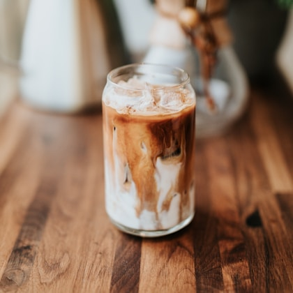
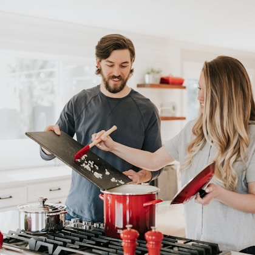

A good drip coffee maker should make solid coffee before you are fully awake. It should heat water properly, distribute water evenly over the grounds, finish the brew in a reasonable window, and avoid turning cleanup into a second job. Extra buttons do not matter much if the machine under-extracts every pot or leaves coffee tasting scorched after twenty minutes on a hot plate.
Our top recommendation for most kitchens is the OXO Brew 8-Cup Coffee Maker. It is compact, SCA-certified, easy to use, and flexible enough to brew either a full carafe or a smaller single-mug batch without making the process feel fussy. If you want a larger thermal-carafe machine, the Bonavita Connoisseur 8-Cup is a strong simple brewer when available. If you want more control, the Breville Precision Brewer is the advanced pick. For a lower price, the Ninja 12-Cup Programmable Brewer is not as refined, but it is easy to find and practical for families who value capacity and scheduling.
The best coffee maker for you depends less on the fanciest feature list and more on how you drink coffee. A person brewing one travel mug before work needs a different machine than a household that empties a full pot by 9 a.m. Thermal carafes matter if coffee sits around. Glass carafes are fine if you drink quickly. Programmability is useful if it helps you avoid rushed mornings, but it will not make stale beans taste fresh.
OXO Brew 8-Cup Coffee Maker
A consistent, compact brewer that gets the basics right: proper temperature, even saturation, simple controls, and a good small-batch mode.
Typical street price: $180 to $230
Bonavita Connoisseur 8-Cup
A straightforward thermal-carafe brewer for people who want good coffee without menus, apps, or complicated programming.
Typical street price: $150 to $220

Breville Precision Brewer Thermal
A flexible machine for coffee drinkers who want adjustable temperature, bloom time, flow settings, cold brew mode, and larger batch capacity.
Typical street price: $280 to $330

Ninja 12-Cup Programmable Brewer
A widely available glass-carafe machine with useful scheduling and larger capacity. It is not the most precise brewer, but it is practical.
Typical street price: $80 to $120
Real product parameters
| Model | Capacity | Carafe | Certification | Dimensions | Key features |
|---|---|---|---|---|---|
| OXO Brew 8-Cup Coffee Maker | 8 cups, also supports single-mug brewing | Thermal stainless steel | SCA-certified home brewer | About 13.5 x 10.5 x 7 in. | Rainmaker showerhead, optional single-serve accessory, simple controls |
| Bonavita Connoisseur 8-Cup | 8 cups, about 1.3 L | Thermal stainless steel | SCA-certified on many listings | About 12.4 x 6.8 x 12.2 in. | One-touch brewing, pre-infusion mode, flat-bottom filter basket |
| Breville Precision Brewer Thermal | Up to 60 oz. | Thermal stainless steel | SCA-certified | About 12.4 x 6.7 x 15.7 in. | Adjustable temperature, bloom, flow rate, cold brew, pour-over adapter support |
| Ninja 12-Cup Programmable Brewer | 12 cups | Glass carafe | Not SCA-certified | About 12 x 8 x 15 in. | Programmable delay brew, classic and rich settings, removable water reservoir on some versions |
These parameters show the basic tradeoff. The OXO and Bonavita models are built around repeatable brewing rather than a long menu. The Breville gives you more control, which is useful if you change beans often or like experimenting. The Ninja is more of a practical household appliance: less precise, more affordable, and easier to justify if you need a big pot and a timer.
What makes coffee taste better
Temperature stability matters more than fancy menus. A machine that reaches the right brew range and showers water evenly will beat a feature-packed machine that under-extracts every pot. The Specialty Coffee Association generally points to water around 195 to 205 degrees Fahrenheit for proper extraction. If water is too cool, coffee tastes thin and sour. If it is too hot or sits on a warming plate too long, it can taste harsh and stale.
Even saturation matters because dry pockets of grounds lead to uneven extraction. A good showerhead spreads water across the bed of coffee rather than drilling one channel through the middle. Filter basket shape also matters. Flat-bottom baskets can be forgiving for medium batches, while cone baskets can work well with careful grind size. None of this requires turning your kitchen into a cafe. It just means the brewer should do the basic physics correctly.
| Feature | Why it matters | Best for |
|---|---|---|
| Thermal carafe | Keeps coffee hot without scorching it | People who sip over an hour or more |
| Showerhead design | Helps saturate grounds more evenly | Better extraction with less fuss |
| Small-batch mode | Prevents weak coffee when brewing less | One or two mugs |
| Simple cleaning | Makes daily use less annoying | Every kitchen |
What we would check before buying
Start with how much coffee you actually drink. A 12-cup machine sounds flexible, but if you usually brew two mugs, a smaller batch mode may matter more. If you drink slowly through the morning, a thermal carafe is usually the better choice because it keeps coffee warm without cooking it on a hot plate. If you finish a pot quickly, a glass carafe is cheaper and easier to monitor.
Measure your counter and cabinet clearance. Some drip machines look compact in product photos but become awkward once you lift the lid, swing out the basket, or remove the water tank. If your cabinets sit low, a front-loading basket or removable reservoir can make daily use much easier. Also check whether the carafe pours cleanly. A drippy carafe turns a good brewer into a daily annoyance.

Why brew temperature matters
Most bad drip coffee is under-extracted, overcooked, or both. A good brewer needs to heat water properly, spread it across the grounds, and finish the brew in a reasonable window. Extra buttons do not fix poor water distribution. We would rather have a simple brewer with stable temperature than a flashy machine with weak extraction.
Grind size and dose still matter. If coffee tastes bitter, do not blame the machine immediately. You may be grinding too fine, using too much coffee, or leaving brewed coffee on heat for too long. If coffee tastes thin, you may be grinding too coarse, using too little coffee, or brewing a tiny batch in a machine designed for larger pots. The machine sets the ceiling, but beans, grind, water, and cleaning decide whether you reach it.
Cleaning and descaling
Cleanup matters because coffee oils go stale quickly. A removable filter basket, wide carafe opening, and simple descaling instructions make daily use less annoying. Machines that hide basic cleaning steps behind tiny parts tend to get neglected, and neglected machines make dull, stale coffee no matter how good the beans are.
Descale based on your water hardness and usage. If your water is hard, mineral buildup can slow brewing and hurt temperature stability. Some machines have reminders, but you can also watch for longer brew times, more steam, or changes in flavor. Use the descaling method recommended by the manufacturer. Vinegar works for some machines, but it can leave odor and is not always the best choice for every brewer.
Thermal vs glass carafes
Thermal carafes are better for people who drink coffee slowly. They keep heat without a burner, so coffee does not keep cooking. The tradeoff is that you cannot see how much coffee is left at a glance, and some thermal carafes are harder to clean. Glass carafes are cheaper, lighter, and easy to monitor. They make sense if the household finishes coffee quickly. The problem starts when coffee sits on a warming plate for an hour and turns flat.
Who should skip a drip coffee maker
Skip a drip machine if you mostly drink espresso, milk drinks, or one carefully brewed cup at a time. A pour-over setup, AeroPress, capsule machine, or espresso machine may match your routine better. Also skip oversized 12-cup machines if you live alone and drink one mug. Bigger machines can make small batches taste weak unless they have a real small-batch mode.
Do not overspend on programmability if you will not prep the machine the night before. Timers are useful only if they match your habits. For many people, a simple brewer with a fast brew cycle and easy cleanup is better than a complicated machine with a menu you stop using after a week.
Water, filters, and the quiet details
Water quality can change a brewer more than a new button or a prettier carafe. If your tap water tastes strongly of chlorine or minerals, coffee will carry that flavor. A simple filtered water pitcher can be enough for many homes. Do not use distilled water for everyday brewing unless the manufacturer recommends it, because coffee extraction needs some mineral content to taste balanced. Soft, clean-tasting water usually gives you a sweeter cup and reduces scale inside the machine.
Paper filters also change flavor. Thicker paper filters can produce a cleaner cup with less sediment, while permanent metal filters let more oils through and can taste heavier. Neither is automatically better. For daily drip coffee, we prefer paper filters because cleanup is easier and flavor is more consistent. If a machine uses basket filters, keep the right size on hand before you run out. A poor-fitting filter can fold over during brewing and dump grounds into the carafe.
Long-term ownership notes
The best coffee maker is not the one that tastes best on day one. It is the one you still use correctly after six months. That means the water reservoir should be easy to fill without spilling, the basket should be easy to remove, the carafe should pour cleanly, and descaling should not feel like a weekend project. Small annoyances matter because coffee makers are used half-awake, often in a hurry, and usually before anyone wants to solve a puzzle.
Replacement parts are another sign of a good long-term buy. Carafes break, lids get lost, baskets crack, and gaskets wear out. A machine from a brand with available parts can stay useful for years. A cheaper machine with no replacement carafe can become trash after one accident. Before buying, search for the model name plus replacement carafe and filter basket. If nothing useful appears, treat that as a warning.
 Best Air Purifiers
Best Air Purifiers Best Office Chairs
Best Office Chairs Best Noise-Cancelling Headphones
Best Noise-Cancelling Headphones